Parque Ibirapuera


Um refúgio de 158 hectares com lagoas, jardins, ciclovias, quadras esportivas, espaços culturais e construções como o Museu de Arte Moderna (MAM) e o Museu de Arte Contemporânea (MAC)
O Parque Ibirapuera,em São Paulo, é possível fazer várias atividades como:
Parque Ibirapuera SP.
Mercado Municipal
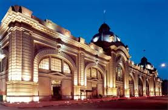 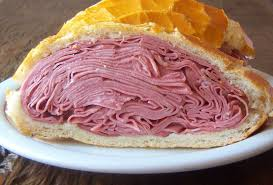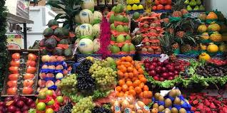 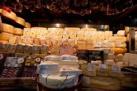 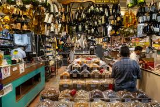 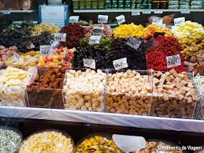 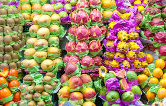
O Mercado Municipal é o maior polo culinário da cidade, com quase 300 boxes que oferecem uma grande variedade de iguarias locais
Gastronomia
O Mercado Municipal é conhecido pela sua riqueza gastronômica, com uma grande variedade de restaurantes e estandes de comida. Alguns dos pratos mais conhecidos são o sanduíche de mortadela, o pastel de bacalhau e o bolinho de bacalhau.Arquitetura
A arquitetura do Mercado Municipal é impressionante e rende lindas fotos e vídeos.Produtos
O Mercado Municipal tem uma grande variedade de produtos, como grãos, chocolates, frutas, embutidos, vinhos, cervejas, cachaças, doces, queijos, carnes e temperos.Experiência cultural
Os mercados municipais captam a essência da cultura local, a riqueza dos sabores e a tradição comercial de uma região.O Mercado Municipal está localizado no centro da cidade de São Paulo e é possível chegar até lá de metrô, descendo nas estações São Bento, Sé ou Luz.
Mercado Municipal SP.
Museu de Arte de São Paulo (MASP)
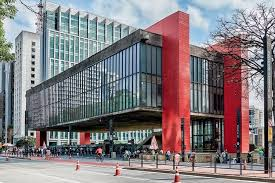 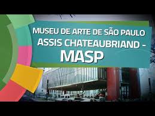 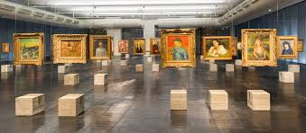 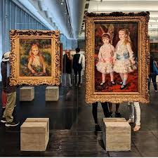 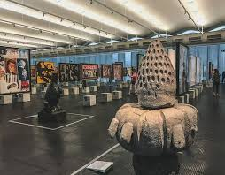 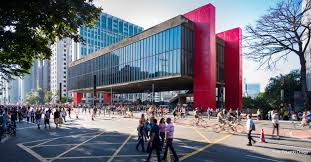 Um dos principais museus do país e o ponto turístico mais procurado em São Paulo,Tem a missão de estabelecer, de maneira crítica e criativa, diálogos entre passado e presente, culturas e territórios, a partir das artes visuais. Para tanto, deve ampliar, preservar, pesquisar e difundir seu acervo, bem como promover o encontro entre públicos e arte por meio de experiências transformadoras e acolhedoras.
MASP
Memorial da América Latina
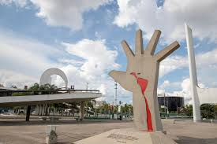 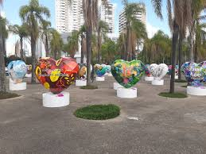 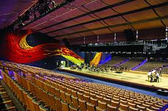 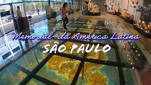 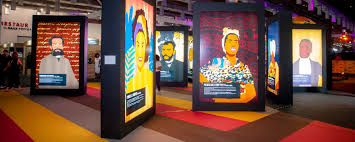 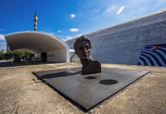Complexo arquitetônico, cultural e educacional com uma exposição fixa gratuita.
No Memorial da América Latina, em São Paulo, você pode:
Memorial da América Latina
Pinacoteca
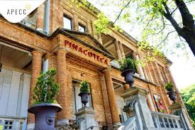 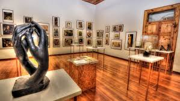 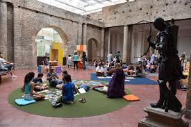 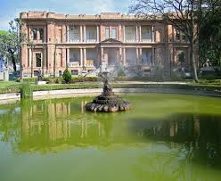 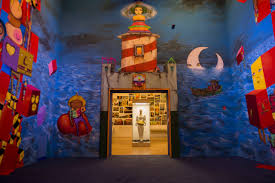 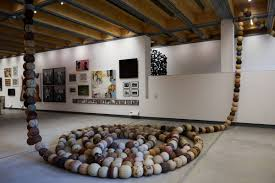 A Pinacoteca de São Paulo é um museu de artes visuais voltado para a produção brasileira concebida desde o século XIX até a contemporaneidade, sempre considerando diálogos com variadas culturas do mundo.Fundada em 1905 pelo Governo do Estado de São Paulo, a Pinacoteca é o museu de arte mais antigo da cidade. E, desde então, vem realizando mostras de sua renomada coleção de arte brasileira e exposições temporárias de artistas nacionais e internacionais.
A Pinacoteca também elabora e apresenta projetos públicos multidisciplinares, além de abrigar um programa educativo abrangente e inclusivo.
Pinacoteca
Museu Catavento
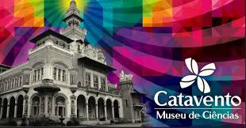 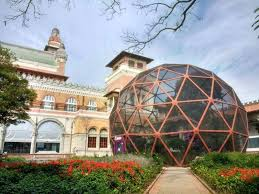 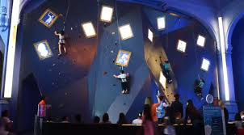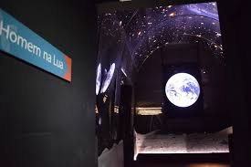
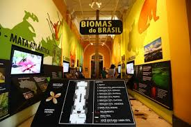 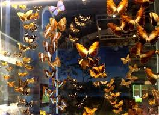
O Museu Catavento, em São Paulo, tem diversas atrações, incluindo:
Link Museu Catavento